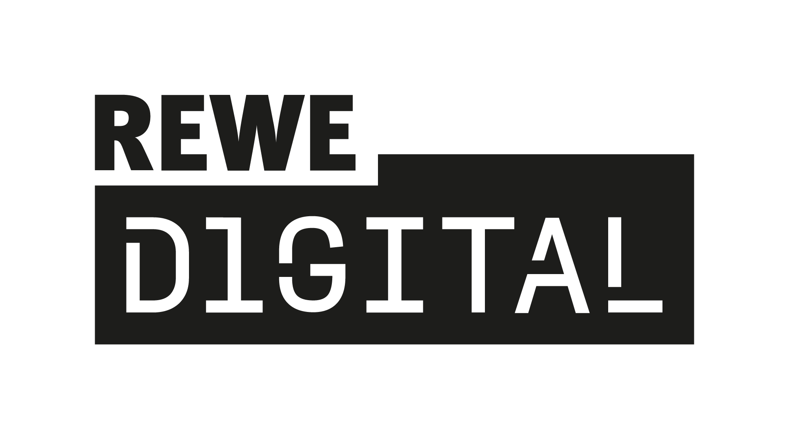
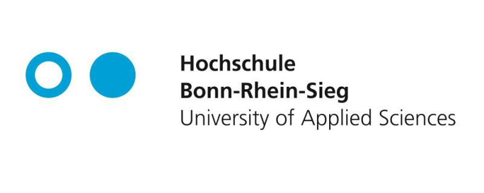

Lebenslauf
Persönliches
Name: Richard Bernhard Franken
Geburtsdatum: 31.10.2000
Standort: Bonn, Deutschland
Berufserfahrung und Projekte
Werkstudium IT Business Analyst SAP-TR
2022–2025 | REWE digitalVerwaltung und Weiterentwicklung des zentralen Treasury SAP-Systems
Projekt zur Automatisierung von Avalgenehmigungen
Sommer 2023 | REWE digitalAutomatisierung der Genehmigungen von Avalen durch BPM-Workflows mit Bizagi
Ausbildung
M.Sc Informatik
2023–heute | Hochschule Bonn-Rhein-Sieg | Sankt AugustinSpezialisierung Wirtschaftsinformatik
B.Sc Wirtschaftsinformatik
2020–2023 | Hochschule Bonn-Rhein-Sieg | Sankt AugustinSpezialisierung betriebliche Informations- und Kommunikationssysteme Gesamtnote 1,3
Allgemeine Hochschulreife
Sommer 2020 | Europaschule TroisdorfAbschlussnote 1,5
Kenntnisse
Technische Skills
- Sprachen: Java, JavaScript, Python
- Frameworks: Flutter, Node.js, Express
- Datenbanken:
- Unternehmenssoftware: SAP-TR, SAP-Serrala-PM
Sprachen
Kontakt
richardfranken14@gmail.com